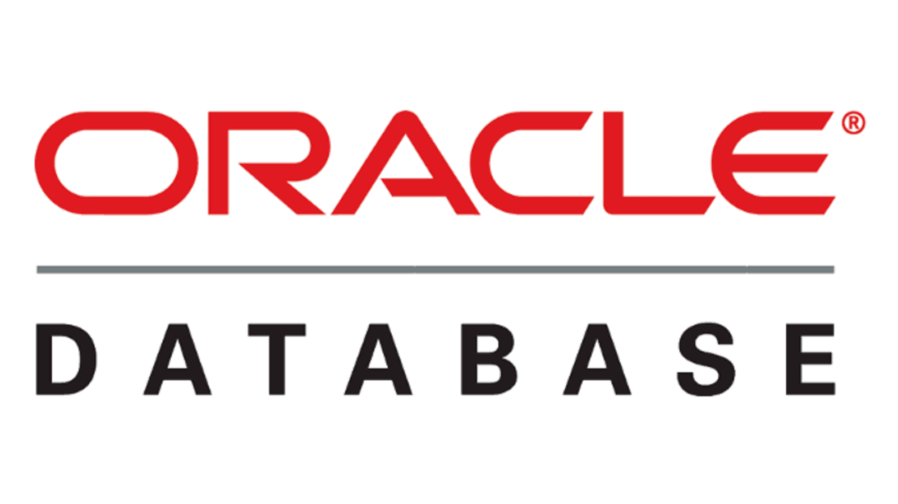

Oracle
PostgreSQL — это бесплатная реляционная, мультимодальная СУБД c открытым исходным кодом.
Популярностью у разработчиков и администраторов база данных PostgreSQL обязана своей исключительной гибкости и целостности. Например, база данных PostgreSQL поддерживает как реляционные, так и нереляционные запросы.